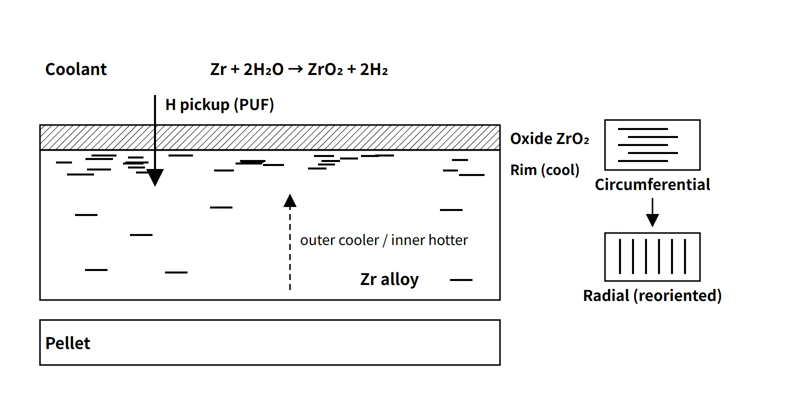

Fuel & Materials · C-FM-005
Cladding Hydriding and Hydrogen Embrittlement — Corrosion Hydrogen Pickup, TSS, Hydride Reorientation, and RIA, LOCA and Dry Storage
How corrosion hydrogen enters zirconium cladding, when it precipitates as brittle hydrides, and why hydride orientation matters for accidents and spent-fuel dry storage.
Cladding hydriding is the precipitation of brittle δ-hydrides when hydrogen absorbed in zirconium-alloy cladding exceeds the terminal solid solubility (TSS); the resulting loss of cladding ductility and toughness is cladding hydrogen embrittlement.
Hydrogen embrittlement is originally a general term for metals. In steel, dissolved hydrogen itself weakens the atomic bonds, whereas zirconium differs in forming a separate phase, the hydride.
Principle and mechanism
Where the hydrogen comes from
- Outer-surface corrosion hydrogen (the main route in normal operation): Zr + 2H₂O → ZrO₂ + 2H₂. Oxidizing 1 mol of Zr produces 4 mol of hydrogen atoms, and part of it passes through the oxide and is absorbed into the metal. That fraction is the hydrogen pickup fraction (PUF); for Zircaloy-4 it is about 15–20 %.
- Primary (internal) hydriding: moisture or organic impurities in the pellets supply hydrogen at the inner surface and form local hydrides (sunbursts, blisters). It was a major cause of failures in the 1960s–70s but is now rare thanks to moisture control in manufacturing.
- Secondary hydriding: water entering through a primary defect such as fretting turns to steam inside, oxidizes the inner surface, and forms blisters at distant locations where the hydrogen partial pressure has risen; these grow into axial cracks.
Oxide thickness and average hydrogen content are nearly proportional. With ZrO₂ density 5.68 g/cm³, wall thickness 0.57 mm and PUF 15 %, the result is about 7.5 wppm per µm of oxide, so 100 µm of oxide gives about 750 wppm. This is a wall average that ignores initial hydrogen and metal consumption, so it differs from the local rim concentration.
![Schematic cross-section of the cladding wall from coolant through the ZrO2 oxide, the zirconium-alloy wall of 0.57 mm and the gap to the UO2 pellet, showing the corrosion reaction Zr + 2H2O to ZrO2 + 2H2 with most hydrogen returning to the coolant and a pickup fraction of about 15 to 20 % entering the metal, a dense hydride rim near the cooler outer surface, sparse circumferential hydrides, dissolved hydrogen moving toward the cooler side, a card comparing circumferential and radial hydrides under hoop tension, and a table of average hydrogen gain of 5.0, 7.5 and 10.0 wppm per µm of oxide for PUF 10, 15 and 20 %, giving about 750 wppm for 100 µm](../../assets/images/concepts/c-fm-005-cladding-hydriding/fig1-hydrogen-path-wall.webp)
Terminal solid solubility (TSS) and hysteresis
The hydrogen solubility in α-Zr rises exponentially with temperature. Kearns's (1967) best-fit dissolution curve is:
- TSSd = 1.2×10⁵ exp(−8,550/RT) wppm (R = 1.987 cal/mol·K)
- Calculated values: 66 wppm at 300 °C, 120 at 350 °C, 201 at 400 °C
The precipitation limit on cooling, TSSp, is higher than TSSd, because precipitation needs supersaturation (hysteresis). A DSC measurement (Zircaloy-4, a pair from the same study) gives TSSd = 4.93×10⁵ exp(−45,087/RT) and TSSp = 1.47×10⁵ exp(−34,117/RT) wppm (R = 8.314 J/mol·K, T in K). With these equations a 150 wppm specimen fully dissolves at about 397 °C on heating, but on cooling precipitation starts only at about 323 °C. Scatter between studies is large, and the effect of minor alloying elements is small.
If the total hydrogen is high enough, cladding in operation (about 300–350 °C) holds only around a hundred ppm in solution and the rest as hydrides. On cooling to room temperature almost all of it precipitates.
![Graph of hydrogen content from 0 to 600 wppm against temperature from 250 to 450 °C with the TSSd dissolution curve and the higher TSSp precipitation curve from one DSC study, the Kearns 1967 TSSd reference curve, a shaded operating band near 280 to 350 °C, a dashed line at the 400 °C storage limit, and a 150 wppm path that fully dissolves at about 397 °C on heating and starts to precipitate at about 323 °C on cooling; a side card lists the three conditions for radial reorientation and the ISG-11 Rev. 3 criteria of 400 °C, fewer than 10 thermal cycles each under 65 °C, and 570 °C for accidents](../../assets/images/concepts/c-fm-005-cladding-hydriding/fig2-tss-hysteresis.webp)
Redistribution of hydrogen — rims and blisters
Hydrogen moves not only down concentration gradients but also down temperature gradients toward the colder side, and toward tensile stress. Because the cladding outer surface is colder than the inner surface, a hydride-dense rim forms just below the outer surface, and lens-shaped blisters grow at cold spots where the oxide has spalled. Rims and blisters are crack initiation sites in an RIA.
Orientation controls ductility — reorientation
Because of the texture of cold-worked, stress-relieved cladding, hydrides normally align circumferentially. This arrangement does not form a through-wall crack path under circumferential tensile load, so it is relatively less harmful — although in large amounts, concentrated in a rim or at low temperature it still contributes to embrittlement. The problem is reorientation. If hydrogen dissolved at high temperature reprecipitates on cooling under a circumferential tensile stress above a threshold (from the rod's internal–external pressure difference), the hydrides align radially. The platelets do not rotate; they dissolve and reprecipitate in a different direction. Radial hydrides form a crack path through the wall thickness and greatly reduce ductility. The drying process in dry storage (high temperature plus high internal pressure) is the typical condition.
Delayed hydride cracking (DHC)
A time-dependent cracking process that repeats: hydrogen diffuses into the tensile stress field at a crack tip and precipitates → the hydride fractures → the crack advances. It is the key degradation mechanism of Zr-2.5Nb pressure tubes in PHWRs, and it is also an evaluation item for long-term storage of spent-fuel cladding.
What it means in a plant
Power operation and high burnup
As burnup rises, the oxide thickens and hydrogen increases to several hundred wppm. Many PWRs have moved from Zircaloy-4 cladding to Nb-bearing alloys such as the ZIRLO family and M5. These alloys have lower corrosion rates and PUF, so they hold less hydrogen at the same burnup.
In accidents — RIA and LOCA
- RIA: cladding with a hydride rim fails under PCMI loading at a lower enthalpy. The failure threshold has therefore become a function of cladding hydrogen content.
- LOCA: hydrogen absorbed during operation increases the oxygen solubility of the β phase at high temperature, lowering post-quench ductility (PQD) even at the same oxidation. Because the current 17 % and 1,204 °C criteria rest on tests of unirradiated cladding, hydrogen-dependent limits are under discussion.
Spent-fuel dry storage
During drying and transfer the cladding temperature rises and hydrides dissolve; if the high internal pressure of high-burnup rods produces hoop stress, radial hydrides can form on cooling. NRC ISG-11 Rev. 3, based on data showing that radial hydrides form even at about 90 MPa, set:
- Peak cladding temperature 400 °C for normal storage and short-term loading operations (vacuum drying, inert-gas backfill, transfer), for all burnups
- Repeated thermal cycling during loading fewer than 10 cycles, each with a temperature change of less than 65 °C
- 570 °C for off-normal and accident conditions
- Low-burnup fuel may use a higher short-term limit if a hoop stress of 90 MPa or less is demonstrated
NUREG-2224 (2020) found that reorientation is possible even at lower temperatures and stresses than the guidance assumed, and set out an evaluation path that assumes reorientation.
Regulatory and design criteria
The criteria below are US NRC requirements and guidance, plus an ASTM standard, given as examples.
| Basis | Key point |
|---|---|
| NUREG-0800 SRP 4.2 Rev. 3 (2007) | Oxidation and hydriding in the fuel system damage criteria; internal hydriding (pellet moisture limit) in the failure criteria; interim RIA thresholds in Appendix B |
| RG 1.236 (2020) | Defines the PCMI failure threshold for control rod ejection and drop accidents as a function of cladding excess hydrogen |
| 10 CFR 50.46(b) | 1,204 °C, 17 % local oxidation, 1 % hydrogen generation — based on unirradiated cladding |
| 10 CFR 50.46c | 2014 proposed rule (hydrogen-dependent oxidation limits), 2016 draft final rule → returned by the Commission in April 2024 — not issued. In a July 2026 proposed rule, the embrittlement research results are proposed to move into a voluntary alternative, 50.46a (still at the proposal stage as of October 2026) |
| ISG-11 Rev. 3 (2003) → NUREG-2215 (2020) | Dry storage peak cladding temperature 400 °C for normal and short-term operations; fewer than 10 thermal cycles, each < 65 °C; accident 570 °C |
| NUREG-2224 (2020) | Technical basis for hydride reorientation in high-burnup cladding |
| ASTM C776 | Upper limit on total hydrogen (including moisture) in UO₂ pellets |
SRP 4.2 Rev. 3 (2007) originally provided only interim RIA criteria in its Appendix B; RG 1.236 has since been issued, while 50.46c is still not a final rule.
Easily confused pairs
| General hydrogen embrittlement (steel etc.) | Cladding hydriding (Zr) | High-temperature hydrogen attack (steel) | |
|---|---|---|---|
| State of hydrogen | Dissolved atoms and traps | Precipitated δ-hydrides | CH₄ voids |
| Controlling factors | Strength, stress, hydrogen concentration | TSS, temperature history, orientation | Temperature, hydrogen partial pressure |
| Recovery | Dehydrogenation heat treatment | Dissolves on heating (reprecipitates) | Irreversible |
| Typical cases | High-strength bolts, welds | Cladding rims and reorientation, pressure-tube DHC | Piping in hydrogen service |
Primary and secondary hydriding are also often mixed up. Primary hydriding is an initial failure caused by internal impurities; secondary hydriding is damage growth that follows an existing defect.
Key points at a glance
- Definition: hydrogen absorbed in Zr cladding precipitates as δ-hydrides above TSS → lower ductility and toughness.
- Hydrogen sources: outer-surface corrosion Zr + 2H₂O → ZrO₂ + 2H₂, PUF (Zr-4 about 15–20 %) / primary (pellet moisture) / secondary (internal steam after a defect).
- Quantity: about 7.5 wppm per µm of oxide (PUF 15 %).
- TSS: TSSd (Kearns) 66 wppm at 300 °C and 201 at 400 °C; the precipitation limit on cooling, TSSp, is higher (hysteresis).
- Redistribution: migrates to the cooler outer surface → rim; blisters at cold spots.
- Reorientation: circumferential (relatively less harmful) → dissolution at high temperature + cooling under hoop stress (about 90 MPa) → radial reprecipitation → sharp loss of ductility.
- DHC: repeated hydrogen accumulation and precipitation at a crack tip; pressure tubes.
- Effects: lower RIA PCMI threshold (RG 1.236), lower LOCA PQD (50.46c not issued), dry storage 400 °C and fewer than 10 thermal cycles.
- Manufacturing measures: control of pellet moisture and total hydrogen, inner-surface cleaning, end-plug welding in He atmosphere, Nb alloys.
- Operating measures: water chemistry (Li, pH), suppression of crud and subcooled boiling, oxide and burnup limits, early monitoring of failed fuel.
